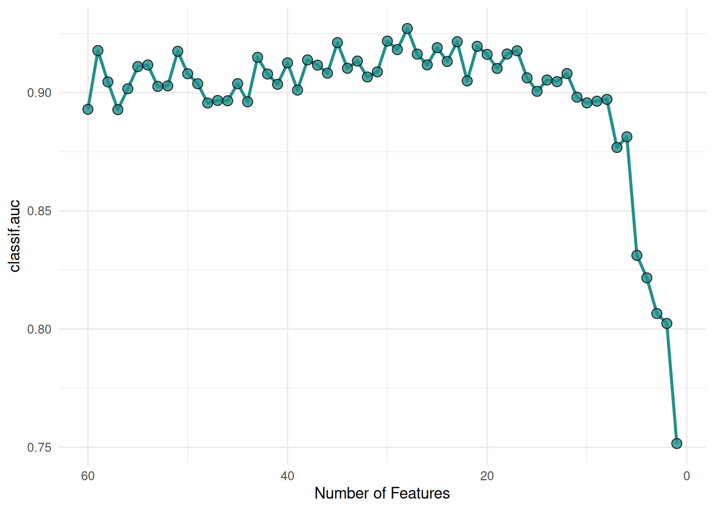

library(mlr3verse)Scope
Feature selection is the process of finding an optimal subset of features in order to improve the performance, interpretability and robustness of machine learning algorithms. In this article, we introduce the wrapper feature selection method Recursive Feature Elimination. Wrapper methods iteratively select features that optimize a performance measure. As an example, we will search for the optimal set of features for a gradient boosting machine and support vector machine on the Sonar data set. We assume that you are already familiar with the basic building blocks of the mlr3 ecosystem. If you are new to feature selection, we recommend reading the feature selection chapter of the mlr3book first.
Recursive Feature Elimination
Recursive Feature Elimination (RFE) is a widely used feature selection method for high-dimensional data sets. The idea is to iteratively remove the least predictive feature from a model until the desired number of features is reached. This feature is determined by the built-in feature importance method of the model. Currently, RFE works with support vector machines (SVM), decision tree algorithms and gradient boosting machines (GBM). Supported learners are tagged with the "importance" property. For a full list of supported learners, see the learner page on the mlr-org website and search for "importance".
Guyon et al. (2002) developed the RFE algorithm for SVMs (SVM-RFE) to select informative genes in cancer classification. The importance of the features is given by the weight vector of a linear support vector machine. This method was later extended to other machine learning algorithms. The only requirement is that the models can internally measure the feature importance. The random forest algorithm offers multiple options for measuring feature importance. The commonly used methods are the mean decrease in accuracy (MDA) and the mean decrease in impurity (MDI). The MDA measures the decrease in accuracy for a feature if it was randomly permuted in the out-of-bag sample. The MDI is the total reduction in node impurity when the feature is used for splitting. Gradient boosting algorithms like XGBoost, LightGBM and GBM use similar methods to measure the importance of the features.
Resampling strategies can be combined with the algorithm in different ways. The frameworks scikit-learn (Pedregosa et al. 2011) and caret (Kuhn 2008) implement a variant called recursive feature elimination with cross-validation (RFE-CV) that estimates the optimal number of features with cross-validation first. Then one more RFE is carried out on the complete dataset with the optimal number of features as the final feature set size. The RFE implementation in mlr3 can rank and aggregate importance scores across resampling iterations. We will explore both variants in more detail below.
mlr3fselect is the feature selection package of the mlr3 ecosystem. It implements the RFE and RFE-CV algorithm. We load all packages of the ecosystem with the mlr3verse package.
We retrieve the RFE optimizer with the fs() function.
optimizer = fs("rfe",
n_features = 1,
feature_number = 1,
aggregation = "rank")The algorithm has multiple control parameters. The optimizer stops when the number of features equals n_features. The parameters feature_number, feature_fraction and subset_size determine the number of features that are removed in each iteration. The feature_number option removes a fixed number of features in each iteration, whereas feature_fraction removes a fraction of the features. The subset_size argument is a vector that specifies exactly how many features are removed in each iteration. The parameters are mutually exclusive and the default is feature_fraction = 0.5. Usually, RFE fits a new model in each resampling iteration and calculates the feature importance again. We can deactivate this behavior by setting recursive = FALSE. The selection of feature subsets in all iterations is then based solely on the importance scores of the first model trained with all features. When running an RFE with a resampling strategy like cross-validation, multiple models and importance scores are generated. The aggregation parameter determines how the importance scores are aggregated. The option "rank" ranks the importance scores in each iteration and then averages the ranks of the features. The feature with the lowest average rank is removed. The option "mean" averages the importance scores of the features across the iterations. The "mean" should only be used if the learner’s importance scores can be reasonably averaged.
Task
The objective of the Sonar data set is to predict whether a sonar signal bounced off a metal cylinder or a rock. The data set includes 60 numerical features (see Figure 1).
task = tsk("sonar")Code
library(ggplot2)
library(data.table)
data = melt(as.data.table(task), id.vars = task$target_names, measure.vars = task$feature_names)
data = data[c("V1", "V10", "V11", "V12", "V13", "V14"), , on = "variable"]
ggplot(data, aes(x = value, fill = Class)) +
geom_density(alpha = 0.5) +
facet_wrap(~ variable, ncol = 6, scales = "free") +
scale_fill_viridis_d(end = 0.8) +
theme_minimal() +
theme(axis.title.x = element_blank())Gradient Boosting Machine
We start with the GBM learner and set the predict type to "prob" to obtain class probabilities.
learner = lrn("classif.gbm",
distribution = "bernoulli",
predict_type = "prob")Now we define the feature selection problem by using the fsi() function that constructs an FSelectInstanceBatchSingleCrit. In addition to the task and learner, we have to select a resampling strategy and performance measure to determine how the performance of a feature subset is evaluated. We pass the "none" terminator because the n_features parameter of the optimizer determines when the feature selection stops.
instance = fsi(
task = task,
learner = learner,
resampling = rsmp("cv", folds = 6),
measures = msr("classif.auc"),
terminator = trm("none"))We are now ready to start the RFE. To do this, we simply pass the instance to the $optimize() method of the optimizer.
optimizer$optimize(instance)The optimizer saves the best feature set and the corresponding estimated performance in instance$result.
Figure 2 shows the optimization path of the feature selection. We observe that the performance increases first as the number of features decreases. As soon as informative features are removed, the performance drops.
Code
library(viridisLite)
library(mlr3misc)
data = as.data.table(instance$archive)
data[, n:= map_int(importance, length)]
ggplot(data, aes(x = n, y = classif.auc)) +
geom_line(
color = viridis(1, begin = 0.5),
linewidth = 1) +
geom_point(
fill = viridis(1, begin = 0.5),
shape = 21,
size = 3,
stroke = 0.5,
alpha = 0.8) +
xlab("Number of Features") +
scale_x_reverse() +
theme_minimal()

The importance scores of the feature sets are recorded in the archive.
as.data.table(instance$archive)[, list(features, classif.auc, importance)] features classif.auc importance
<list> <num> <list>
1: V1,V10,V11,V12,V13,V14,... 0.8929304 58.83333,58.83333,54.50000,54.00000,53.33333,52.50000,...
2: V1,V10,V11,V12,V13,V15,... 0.9177811 57.33333,56.00000,54.00000,53.66667,50.50000,50.00000,...
3: V1,V10,V11,V12,V13,V15,... 0.9045253 54.83333,54.66667,54.66667,53.00000,51.83333,51.33333,...
4: V1,V10,V11,V12,V13,V15,... 0.8927833 56.00000,55.83333,53.00000,52.00000,50.16667,50.00000,...
5: V1,V10,V11,V12,V13,V15,... 0.9016274 55.50000,53.50000,51.33333,50.00000,49.00000,48.50000,...
---
56: V11,V12,V16,V48,V9 0.8311625 4.166667,3.333333,2.833333,2.500000,2.166667
57: V11,V12,V16,V9 0.8216772 3.833333,2.666667,2.000000,1.500000
58: V11,V12,V16 0.8065807 2.833333,1.833333,1.333333
59: V11,V12 0.8023780 1.833333,1.166667
60: V11 0.7515904 1Support Vector Machine
Now we will select the optimal feature set for an SVM with a linear kernel. The importance scores are the weights of the model.
learner = lrn("classif.svm",
type = "C-classification",
kernel = "linear",
predict_type = "prob")The SVM learner does not support the calculation of importance scores at first. The reason is that importance scores cannot be determined with all kernels. This can be seen by the missing "importance" property.
learner$properties[1] "multiclass" "twoclass" Using the "mlr3fselect.svm_rfe" callback however makes it possible to use a linear SVM with the RFE optimizer. The callback adds the $importance() method internally to the learner. We load the callback with the clbk() function and pass it as the "callback" argument to fsi().
instance = fsi(
task = task,
learner = learner,
resampling = rsmp("cv", folds = 6),
measures = msr("classif.auc"),
terminator = trm("none"),
callback = clbk("mlr3fselect.svm_rfe"))We start the feature selection.
optimizer$optimize(instance)Figure 3 shows the average performance of the SVMs depending on the number of features. We can see that the performance increases significantly with a reduced feature set.
Code
library(viridisLite)
library(mlr3misc)
data = as.data.table(instance$archive)
data[, n:= map_int(importance, length)]
ggplot(data, aes(x = n, y = classif.auc)) +
geom_line(
color = viridis(1, begin = 0.5),
linewidth = 1) +
geom_point(
fill = viridis(1, begin = 0.5),
shape = 21,
size = 3,
stroke = 0.5,
alpha = 0.8) +
xlab("Number of Features") +
scale_x_reverse() +
theme_minimal()For datasets with a lot of features, it is more efficient to remove several features per iteration. We show an example where 25% of the features are removed in each iteration.
optimizer = fs("rfe", n_features = 1, feature_fraction = 0.75)
instance = fsi(
task = task,
learner = learner,
resampling = rsmp("cv", folds = 6),
measures = msr("classif.auc"),
terminator = trm("none"),
callback = clbk("mlr3fselect.svm_rfe"))
optimizer$optimize(instance)Figure 4 shows a similar optimization curve as Figure 3 but with fewer evaluated feature sets.
Code
library(viridisLite)
library(mlr3misc)
data = as.data.table(instance$archive)
data[, n:= map_int(importance, length)]
ggplot(data, aes(x = n, y = classif.auc)) +
geom_line(
color = viridis(1, begin = 0.5),
linewidth = 1) +
geom_point(
fill = viridis(1, begin = 0.5),
shape = 21,
size = 3,
stroke = 0.5,
alpha = 0.8) +
xlab("Number of Features") +
scale_x_reverse() +
theme_minimal()Recursive Feature Elimination with Cross Validation
RFE-CV estimates the optimal number of features before selecting a feature set. For this, an RFE is run in each resampling iteration and the number of features with the best mean performance is selected (see Figure 5). Then one more RFE is carried out on the complete dataset with the optimal number of features as the final feature set size.
%%{ init: { 'flowchart': { 'curve': 'bump' } } }%%
flowchart TB
cross-validation[3-Fold Cross-Validation]
cross-validation-->rfe-1
cross-validation-->rfe-2
cross-validation-->rfe-3
subgraph rfe-1[RFE 1]
direction TB
f14[4 Features]
f13[3 Features]
f12[2 Features]
f11[1 Features]
f14-->f13-->f12-->f11
style f13 fill:#ccea84
end
subgraph rfe-2[RFE 2]
direction TB
f24[4 Features]
f23[3 Features]
f22[2 Features]
f21[1 Features]
f24-->f23-->f22-->f21
style f23 fill:#ccea84
end
subgraph rfe-3[RFE 3]
direction TB
f34[4 Features]
f33[3 Features]
f32[2 Features]
f31[1 Features]
f34-->f33-->f32-->f31
style f33 fill:#ccea84
end
all_obs[All Observations]
rfe-1-->all_obs
rfe-2-->all_obs
rfe-3-->all_obs
all_obs --> rfe
subgraph rfe[RFE]
direction TB
f54[4 Features]
f53[3 Features]
f54-->f53
style f53 fill:#8e6698
end
We retrieve the RFE-CV optimizer. RFE-CV has almost the same control parameters as the RFE optimizer. The only difference is that no aggregation is needed.
optimizer = fs("rfecv",
n_features = 1,
feature_number = 1)The chosen resampling strategy is used to estimate the optimal number of features. The 6-fold cross-validation results in 6 RFE runs. You can choose any other resampling strategy with multiple iterations. Let’s start the feature selection.
learner = lrn("classif.svm",
type = "C-classification",
kernel = "linear",
predict_type = "prob")
instance = fsi(
task = task,
learner = learner,
resampling = rsmp("cv", folds = 6),
measures = msr("classif.auc"),
terminator = trm("none"),
callback = clbk("mlr3fselect.svm_rfe"))
optimizer$optimize(instance)
Warning
The performance of the optimal feature set is calculated on the complete data set and should not be reported as the performance of the final model. Estimate the performance of the final model with nested resampling.
We visualize the selection of the optimal number of features. Each point is the mean performance of the number of features. We achieved the best performance with 19 features.
Code
library(ggplot2)
library(viridisLite)
library(mlr3misc)
data = as.data.table(instance$archive)[!is.na(iteration), ]
aggr = data[, list("y" = mean(unlist(.SD))), by = "batch_nr", .SDcols = "classif.auc"]
aggr[, batch_nr := 61 - batch_nr]
data[, n:= map_int(importance, length)]
ggplot(aggr, aes(x = batch_nr, y = y)) +
geom_line(
color = viridis(1, begin = 0.5),
linewidth = 1) +
geom_point(
fill = viridis(1, begin = 0.5),
shape = 21,
size = 3,
stroke = 0.5,
alpha = 0.8) +
geom_vline(
xintercept = aggr[y == max(y)]$batch_nr,
colour = viridis(1, begin = 0.33),
linetype = 3
) +
xlab("Number of Features") +
ylab("Mean AUC") +
scale_x_reverse() +
theme_minimal()
The archive contains the extra column "iteration" that indicates in which resampling iteration the feature set was evaluated. The feature subsets of the final RFE run have no value in the "iteration" column because they were evaluated on the complete data set.
as.data.table(instance$archive)[, list(features, classif.auc, iteration, importance)] features classif.auc iteration importance
<list> <num> <int> <list>
1: V1,V10,V11,V12,V13,V14,... 0.8782895 1 2.864018,1.532774,1.408485,1.399930,1.326165,1.167745,...
2: V1,V10,V11,V12,V13,V14,... 0.7026144 2 2.056442,1.706077,1.258703,1.191762,1.190752,1.178514,...
3: V1,V10,V11,V12,V13,V14,... 0.8790850 3 1.950412,1.887710,1.820891,1.616219,1.231928,1.138675,...
4: V1,V10,V11,V12,V13,V14,... 0.8125000 4 2.6958580,1.5623759,1.4990138,1.3902109,0.9385757,0.9232132,...
5: V1,V10,V11,V12,V13,V14,... 0.8807018 5 2.487483,1.470778,1.356517,1.033764,0.635383,0.575074,...
---
398: V1,V11,V12,V16,V23,V3,... 0.9605275 NA 2.0089739,1.1047492,1.0011253,0.6602411,0.6015470,0.5431803,...
399: V1,V12,V16,V23,V3,V30,... 0.9595988 NA 1.8337471,1.1937962,0.9853467,0.7751384,0.7296726,0.6222569,...
400: V1,V12,V16,V23,V3,V30,... 0.9589486 NA 1.8824952,1.2468164,1.0106654,0.8090618,0.6983925,0.6568389,...
401: V1,V12,V16,V23,V3,V30,... 0.9559766 NA 2.3872902,0.9094028,0.8809098,0.8277941,0.7841591,0.7792772,...
402: V1,V12,V16,V23,V3,V30,... 0.9521687 NA 1.9485133,1.1482257,1.1098823,0.9591012,0.8234140,0.8118616,...Final Model
The learner we use to make predictions on new data is called the final model. The final model is trained with the optimal feature set on the full data set. The optimal set consists of 19 features and is stored in instance$result_feature_set. We subset the task to the optimal feature set and train the learner.
task$select(instance$result_feature_set)
learner$train(task)The trained model can now be used to predict new, external data.
Conclusion
The RFE algorithm is a valuable feature selection method, especially for high-dimensional datasets with only a few observations. The numerous settings of the algorithm in mlr3 make it possible to apply it to many datasets and learners. If you want to know more about feature selection in general, we recommend having a look at our book.
Session Information
sessioninfo::session_info(info = "packages")═ Session info ═══════════════════════════════════════════════════════════════════════════════════════════════════════
─ Packages ───────────────────────────────────────────────────────────────────────────────────────────────────────────
! package * version date (UTC) lib source
backports 1.5.0 2024-05-23 [1] CRAN (R 4.4.1)
bbotk 1.1.1 2024-10-15 [1] CRAN (R 4.4.1)
checkmate 2.3.2 2024-07-29 [1] CRAN (R 4.4.1)
P class 7.3-22 2023-05-03 [?] CRAN (R 4.4.0)
cli 3.6.3 2024-06-21 [1] CRAN (R 4.4.1)
clue 0.3-65 2023-09-23 [1] CRAN (R 4.4.1)
P cluster 2.1.6 2023-12-01 [?] CRAN (R 4.4.0)
P codetools 0.2-20 2024-03-31 [?] CRAN (R 4.4.0)
colorspace 2.1-1 2024-07-26 [1] CRAN (R 4.4.1)
crayon 1.5.3 2024-06-20 [1] CRAN (R 4.4.1)
data.table * 1.16.2 2024-10-10 [1] CRAN (R 4.4.1)
DEoptimR 1.1-3 2023-10-07 [1] CRAN (R 4.4.1)
digest 0.6.37 2024-08-19 [1] CRAN (R 4.4.1)
diptest 0.77-1 2024-04-10 [1] CRAN (R 4.4.1)
dplyr 1.1.4 2023-11-17 [1] CRAN (R 4.4.1)
e1071 1.7-16 2024-09-16 [1] CRAN (R 4.4.1)
evaluate 1.0.1 2024-10-10 [1] CRAN (R 4.4.1)
fansi 1.0.6 2023-12-08 [1] CRAN (R 4.4.1)
farver 2.1.2 2024-05-13 [1] CRAN (R 4.4.1)
fastmap 1.2.0 2024-05-15 [1] CRAN (R 4.4.1)
flexmix 2.3-19 2023-03-16 [1] CRAN (R 4.4.1)
fpc 2.2-13 2024-09-24 [1] CRAN (R 4.4.1)
future 1.34.0 2024-07-29 [1] CRAN (R 4.4.1)
future.apply 1.11.2 2024-03-28 [1] CRAN (R 4.4.1)
gbm 2.2.2 2024-06-28 [1] CRAN (R 4.4.1)
generics 0.1.3 2022-07-05 [1] CRAN (R 4.4.1)
ggplot2 * 3.5.1 2024-04-23 [1] CRAN (R 4.4.1)
globals 0.16.3 2024-03-08 [1] CRAN (R 4.4.1)
glue 1.8.0 2024-09-30 [1] CRAN (R 4.4.1)
gtable 0.3.5 2024-04-22 [1] CRAN (R 4.4.1)
htmltools 0.5.8.1 2024-04-04 [1] CRAN (R 4.4.1)
htmlwidgets 1.6.4 2023-12-06 [1] CRAN (R 4.4.1)
jsonlite 1.8.9 2024-09-20 [1] CRAN (R 4.4.1)
kernlab 0.9-33 2024-08-13 [1] CRAN (R 4.4.1)
knitr 1.48 2024-07-07 [1] CRAN (R 4.4.1)
labeling 0.4.3 2023-08-29 [1] CRAN (R 4.4.1)
P lattice 0.22-5 2023-10-24 [?] CRAN (R 4.3.3)
lgr 0.4.4 2022-09-05 [1] CRAN (R 4.4.1)
lifecycle 1.0.4 2023-11-07 [1] CRAN (R 4.4.1)
listenv 0.9.1 2024-01-29 [1] CRAN (R 4.4.1)
magrittr 2.0.3 2022-03-30 [1] CRAN (R 4.4.1)
P MASS 7.3-61 2024-06-13 [?] CRAN (R 4.4.1)
P Matrix 1.7-0 2024-04-26 [?] CRAN (R 4.4.0)
mclust 6.1.1 2024-04-29 [1] CRAN (R 4.4.1)
mlr3 * 0.21.1 2024-10-18 [1] CRAN (R 4.4.1)
mlr3cluster 0.1.10 2024-10-03 [1] CRAN (R 4.4.1)
mlr3data 0.7.0 2023-06-29 [1] CRAN (R 4.4.1)
mlr3extralearners 0.9.0-9000 2024-10-18 [1] Github (mlr-org/mlr3extralearners@a622524)
mlr3filters 0.8.0 2024-04-10 [1] CRAN (R 4.4.1)
mlr3fselect * 1.1.1.9000 2024-10-18 [1] Github (mlr-org/mlr3fselect@e917a02)
mlr3hyperband 0.6.0 2024-06-29 [1] CRAN (R 4.4.1)
mlr3learners 0.7.0 2024-06-28 [1] CRAN (R 4.4.1)
mlr3mbo 0.2.6 2024-10-16 [1] CRAN (R 4.4.1)
mlr3measures 1.0.0 2024-09-11 [1] CRAN (R 4.4.1)
mlr3misc * 0.15.1 2024-06-24 [1] CRAN (R 4.4.1)
mlr3pipelines 0.7.0 2024-09-24 [1] CRAN (R 4.4.1)
mlr3tuning 1.0.2 2024-10-14 [1] CRAN (R 4.4.1)
mlr3tuningspaces 0.5.1 2024-06-21 [1] CRAN (R 4.4.1)
mlr3verse * 0.3.0 2024-06-30 [1] CRAN (R 4.4.1)
mlr3viz 0.9.0 2024-07-01 [1] CRAN (R 4.4.1)
mlr3website * 0.0.0.9000 2024-10-18 [1] Github (mlr-org/mlr3website@20d1ddf)
modeltools 0.2-23 2020-03-05 [1] CRAN (R 4.4.1)
munsell 0.5.1 2024-04-01 [1] CRAN (R 4.4.1)
P nnet 7.3-19 2023-05-03 [?] CRAN (R 4.3.3)
palmerpenguins 0.1.1 2022-08-15 [1] CRAN (R 4.4.1)
paradox 1.0.1 2024-07-09 [1] CRAN (R 4.4.1)
parallelly 1.38.0 2024-07-27 [1] CRAN (R 4.4.1)
pillar 1.9.0 2023-03-22 [1] CRAN (R 4.4.1)
pkgconfig 2.0.3 2019-09-22 [1] CRAN (R 4.4.1)
prabclus 2.3-4 2024-09-24 [1] CRAN (R 4.4.1)
proxy 0.4-27 2022-06-09 [1] CRAN (R 4.4.1)
R6 2.5.1 2021-08-19 [1] CRAN (R 4.4.1)
Rcpp 1.0.13 2024-07-17 [1] CRAN (R 4.4.1)
renv 1.0.11 2024-10-12 [1] CRAN (R 4.4.1)
rlang 1.1.4 2024-06-04 [1] CRAN (R 4.4.1)
rmarkdown 2.28 2024-08-17 [1] CRAN (R 4.4.1)
robustbase 0.99-4-1 2024-09-27 [1] CRAN (R 4.4.1)
scales 1.3.0 2023-11-28 [1] CRAN (R 4.4.1)
sessioninfo 1.2.2 2021-12-06 [1] CRAN (R 4.4.1)
spacefillr 0.3.3 2024-05-22 [1] CRAN (R 4.4.1)
stringi 1.8.4 2024-05-06 [1] CRAN (R 4.4.1)
P survival 3.7-0 2024-06-05 [?] CRAN (R 4.4.0)
tibble 3.2.1 2023-03-20 [1] CRAN (R 4.4.1)
tidyselect 1.2.1 2024-03-11 [1] CRAN (R 4.4.1)
utf8 1.2.4 2023-10-22 [1] CRAN (R 4.4.1)
uuid 1.2-1 2024-07-29 [1] CRAN (R 4.4.1)
vctrs 0.6.5 2023-12-01 [1] CRAN (R 4.4.1)
viridisLite * 0.4.2 2023-05-02 [1] CRAN (R 4.4.1)
withr 3.0.1 2024-07-31 [1] CRAN (R 4.4.1)
xfun 0.48 2024-10-03 [1] CRAN (R 4.4.1)
yaml 2.3.10 2024-07-26 [1] CRAN (R 4.4.1)
[1] /home/marc/repositories/mlr3website/mlr-org/renv/library/linux-ubuntu-noble/R-4.4/x86_64-pc-linux-gnu
[2] /home/marc/.cache/R/renv/sandbox/linux-ubuntu-noble/R-4.4/x86_64-pc-linux-gnu/9a444a72
P ── Loaded and on-disk path mismatch.
──────────────────────────────────────────────────────────────────────────────────────────────────────────────────────References
Guyon, Isabelle, Jason Weston, Stephen Barnhill, and Vladimir Vapnik. 2002. “Gene Selection for Cancer Classification Using Support Vector Machines.” Machine Learning 46 (1): 389–422. https://doi.org/10.1023/A:1012487302797.
Kuhn, Max. 2008. “Building Predictive Models in r Using the Caret Package.” Journal of Statistical Software 28 (November): 1–26. https://doi.org/10.18637/jss.v028.i05.
Pedregosa, Fabian, Gaël Varoquaux, Alexandre Gramfort, Vincent Michel, Bertrand Thirion, Olivier Grisel, Mathieu Blondel, et al. 2011. “Scikit-Learn: Machine Learning in Python.” Journal of Machine Learning Research 12 (85): 2825–30. http://jmlr.org/papers/v12/pedregosa11a.html.